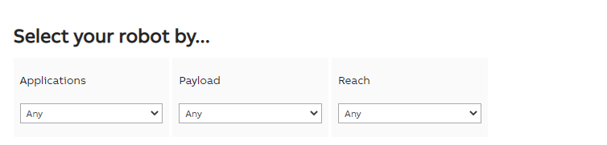
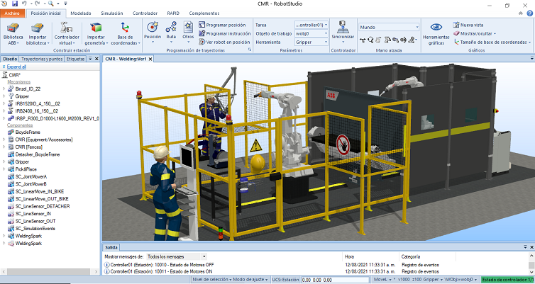
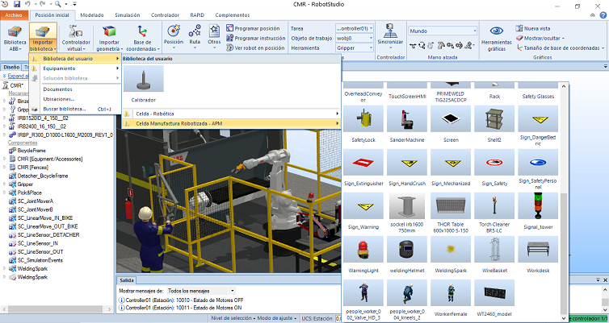

El proyecto final de la asignatura tiene como propósito general hacer uso del software ABB ROBOTSTUDIO para la programación y simulación de una celda robótica integrando los conceptos trabajados en clase de laboratorio y aplicando las herramientas de software con el objetivo de automatizar el proceso industrial asignado a cada equipo de trabajo.
INTRODUCCIÓN
En el siguiente documento se resume el trabajo de diseño de la Celda de Manufactura Robotizada a implementar en el proyecto, comenzando por
la hoja de ruta grupal para el diseño general de una CMR describiendo cada uno de los pasos
a tener presente y formulada a partir del trabajo individual. Acorde a la hoja de ruta,
se seleccionan las operaciones sobre las cuáles se enfocará el trabajo de la celda, analizando
la viabilidad de las tareas a automatizar por medio de la celda junto con el diagrama de operaciones y máquinas, generando un esquema preliminar
de la alternativa dominante con la distribución de operaciones y máquinas en las estaciones,
descripción de entradas y salidas de producto, acceso de personal, etc. Continuando, se presentan los criterios empleados para la selección de los
robots manipuladores y el posicionador para la celda. En la hoja siguiente se encuentra la matriz de riesgos en donde se analiza cada uno de los
peligros dependiendo de su nivel de riesgo y se sugieren las alternativas y elementos de protección y seguridad que se implementarán finalmente
en la celda.
SOLUCIÓN PROPUESTA
En el siguiente video se presenta de forma resumida la simulación completa de la celda robótica desde
el entorno de RobotStudio® realizando la secuencia de automatización para el proceso asignado y describiendo
la estructura y distribución de la celda, conexión de componentes inteligentes, entradas y salidas digitales,
programa de código principal, y demás elementos incorporados para la ejecución del proyecto.
Con base en el enunciado del proyecto, se requiere implementar dos robots manipuladores como mínimo para la ejecución de las tareas de automatización del proceso asignado. En ésta sección se presentan los criterios de selección empleados para elegir los robots trabajados en el proyecto, además de hacer un análisis de las herramientas seleccionadas para cada tarea.
SELECCIÓN DEL ROBOT (MARCA Y REFERENCIA)
Considerando la alta oferta en robots industriales que brinda este proveedor, ABB dispone de una herramienta de selección denominada Robot selector
desde su página web (o ingresando aquí) la cuál permite filtrar
los diferentes modelos empleando como principales criterios de selección: la aplicación, la carga útil y el alcance máximo.
1ER ROBOT. Para la primer tarea, el robot debe tomar cada una de las 20 piezas que conforman la vajilla de 4 puestos desde unas bandas de alimentación y colocarlas en orden dentro de la caja de cartón. Encontramos varias aplicaciones que engloban esta acción, como lo son Material handling o Packing, por tanto buscamos una referencia de propósito general. Respecto a la carga útil, el robot sólo manipulará una pieza a la vez, y la pieza de vajilla más pesada no alcanza ni 1 kilogramo de peso, por lo cual considerando un peso promedio de la herramienta la opción más adecuada es "up to 7(kg)". Finalmente, para el alcance del robot, dado que se requiere alcanzar la piezas desde la respectiva banda para su posterior embalaje, se eligen entre las opciones disponibles al robot de mayor alcance, el cual corresponde al IRB 1600.
El proyecto final de la asignatura tiene como propósito general hacer uso del software ABB ROBOTSTUDIO para la programación y simulación de una celda de manufactura robotizada integrando los conceptos trabajados en clase y aplicando las herramientas de software con el objetivo de automatizar determinadas operaciones de la línea de fabricación de bicicletas.
SELECCIÓN Y AUTOMATIZACIÓN DE LA OPERACIÓN
Conforme la hoja de ruta, los primeros pasos se realizaron a partir del análisis de operaciones llevado
a cabo en la sección de Gestión de la producción y automatización , en donde modelamos cada operación por
estación de trabajo y las subtareas requeridas para cada uno de los procesos de manufactura. Partiendo de
esta información, análizamos las tareas que consumen un mayor tiempo de ciclo, la practicidad de automatizarlas
por medio de celdas robotizada y las tareas sobre las cuáles existen precedentes y por tanto se comercializan
los equipos y herramientas necesarias para su implementación, enfoncándonos en procesos repetitivos y descartando
tareas de montaje y ensamble debido a la necesidad de un equipo más especializado y las limitaciones para
inspeccionar cada uno de los productos terminados sin la intervención de un operario humano.
Posteriormente, el equipo de trabajo se reunió para debatir las opciones más viables, y finalmente se seleccionaron
las operaciones de soldadura de marcos y la limpieza de las piezas soldadas, operaciones consecutivas para así
integrarlas a una única celda de manufactura.
ASPECTOS GENERALES DE LA CELDA
Se plantea el diseño de una celda para integrar dos estaciones, una de soldadura ①
y otra de limpieza ② (lijado,
afinado y pulido). Considerando las características particulares de cada proceso, el entorno de trabajo requerido
y junto con el equipo y herramientas necesarios, un sólo manipulador será insuficiente y poco recomendado para
trabajar simultáneamente en dos entornos de trabajo tan diferentes, dado que ésto implicaría un cambio constante
de herramientas y un alto alcance ó la implementación de un séptimo eje (o riel) para desplazarse entre un espacio
de trabajo y otro. Por ésta razón, se plantean como mínimo dos robots manipuladores para que cada uno ejecute una
tarea en un espacio adaptado para la respectiva operación, además de un posible tercer mecanismo para controlar la
entrada y salida de material a la celda y realizar el transporte de piezas entre una estación y otra.
DISEÑO PRELIMINAR DE LA CELDA DE TRABAJO
Partiendo del diagrama de flujo y maquinaria, se esboza un diseño preliminar de la celda de manufactura robotizada,
estableciendo la secuencia de procesos en la entrada y salida del material y la distribución general de las máquinas
y puestos de trabajo en la celda. Se definen las dos estaciones con su respectivo manipulador en el centro de cada
una de estas para cubrir el mayor espacio de trabajo posible y adaptar las medidas de seguridad necesarias. Ambos
espacios de trabajo estarán separados por un tercer mecanismo que permitirá el intercambio de material entre ambas
estaciones. El flujo de entrada y salida de material se encuentra en la segunda estación, dado que el primer robot
no estará considerado para la manipulación y transporte de las piezas en la celda. La celda en su totalidad se encontrará
cercada por barreras físicas acorde a la matriz que se detallará en el análisis de riesgos.

SELECCIÓN DE ROBOTS
Dado el enfoque tomado desde el módulo de Celdas de Manufactura Robotizadas y la experiencia con el software RobotStudio
de ABB, se decide en primer lugar que la simulación, cotización y adquisición de los manipuladores se realizará con este
proveedor, dado que además de suministrarnos las licencias y herramientas de software necesarias para el diseño detallado,
es una empresa especializada con una basta experiencia en el campo de la robótica, automatización, equipamientos industriales
y otras tecnologías de ingeniería. Considerando la alta oferta en robots que brinda este proveedor, ABB dispone de una
herramienta de selección denominada Robot selector desde su página web (ingresando
aquí) la cuál permite filtrar los diferentes
modelos empleando como principales criterios de selección: la aplicación para la cuál se va a emplear, la carga útil que
manipulará el efector final y el alcance máximo. También se cuenta con un aplicativo para el cálculo y validación de la carga
llamado RobotLoad, sin embargo para el uso del mismo se requiere primero haber seleccionado el robot de trabajo entre los modelos
admitidos y contar con las especificaciones de CoG, Jx Jy Jz, y TCP de la herramienta.

| Arc welding, Assembly, Cleaning, Coating, Collaboration, Cutting, Deburring, Depalletizing, Die casting, Dispensing, Enamelling, Full layer palletizing, Glazing, Gluing, Grinding, Heavy arc welding, Injection moulding, Insertion, Item picking, Kitting, Loading, Loading and unloading, Machine tending, Material handling, Measuring, Packing, Painting, Palletizing, Parts inspection, Picking, Polishing, Powdering, Powertrain assembly, Premachining, Press automation, Press brake tending, Press tending, Rubber insertion, Screw driving, Screwdriving, Sealing, Small parts assembly, Spot welding, Spraying, Testing, Unloading, Welding, Packing. | Up to 7 (kg) 7 - 16 (kg) 16 - 60 (kg) 60 - 225 (kg) Over 225 (kg) |
Up to 1.55 (m) Up to 1.8 (m) 1.8 - 2.55 (m) Over 2.55 (m) |


Entre las alternativas analizadas para un tercer mecanismo, se requiere que éste no sólo intervenga en el transporte de la pieza entre ambas estaciones de trabajo sino que además pueda apoyar la operación de soldadura, dado que se requerirá de una rotación de la pieza para que la herramienta del manipulador pueda alcanzar todos los puntos de unión de la estructura. El proveedor ABB cuenta así mismo con una serie de posicionadores, varios de los cuáles están diseñados especificamente para ese propósito, por tanto se analizan las opciones de la serie de posicionadores IRBP, para trabajo cooperativo con robots IRB.


SELECCIÓN DE HERRAMIENTAS
La selección del tipo de herramienta se consideró partiendo de una búsqueda preliminar de máquinas empleadas en este tipo de industria y
considerando las propiedades físicas de la pieza de trabajo a manipular. Para la primer tarea, se estableció que los platos y pocillos serían
de loza o porcelana, un material recubierto e impermeabilizado con poca adhesión, y la geometría convencional de la vajilla dificulta su manipulación
con un gripper de pinza convencional al no poder garantizar la posición tras el agarre. Bajo estas mismas razones, se decidió emplear una gripper de
vacío, dado que la superficie lisa en el centro de los platos y al interior del pocillo facilitan el agarre por succión desde una sola cara de la pieza.
Para la segunda tarea, considerando el ejemplo realizado en clase de laboratorio y haciendo una búsqueda general, encontramos que estas mismas
herramientas de vacío son bastante utilizadas para las aplicaciones de palletizado, y las características de la herramienta como en general el tamaño y
la cantidad de copas de succión aumentarán dependiendo del peso de la carga a manipular.
Con esta selección de herramientas, se procedió a realizar una búsqueda de fabricantes y referencias para tener una pespectiva más amplia de estas
herramientas, y partimos de los diseños CAD de la línea de grippers de vacio disponibles por parte del proovedor ROBOTIQ, sin embargo, algunas
características se modificaron para poder adaptarlas a la tarea en cuestión y modelar la herramienta para su simulación en el entorno RobotStudio®.
ESTRUCTURA Y ELEMENTOS DE LA CELDA
Con base en el ideal planteado por el equipo, partimos de realizar la búsqueda de los modelos CAD para los diversos elementos
que conformarían la celda de trabajo, comenzando por insertar los modelos de los robots previamente seleccionados desde la
Biblioteca ABB y los diseños CAD de las herramientas ya adaptados y configurados como tool para su uso en RobotStudio®.
Desde este punto, comenzamos a incorporar otros elementos fundamentales para la simulación, partiendo por el material inicial que
corresponde a las 5 piezas de vajilla, las bandas transportadoras de alimentación, un modelo preliminar de la caja y la banda
para el ingreso de las cajas a la celda. A medida que se insertaban estos elementos se iban sumando otros componentes gráficos
que pese a no intervenir directamente en el proceso harían de complemento en el diseño de la celda, como
vallas de protección, operarios y máquinas, diversos elementos de seguridad, entre otros.
Una vez contábamos con todos los elementos previstos para la primer tarea, se procedió a decidir la estructura de la celda y
reorientar el segundo robot para incorporar las estibas de madera y la cinta transportadora por cadena, de tal modo que se
conectara la salida de la primer etapa con la entrada para la segunda, conservando la secuencia y manteniendo las distancias
de seguridad y áreas reservadas para el movimiento del personal. A lo largo de todo el diseño se continuó agregando y adaptando
componentes graficos para la ambientación de la celda.

COMPONENTES INTELIGENTES E INTERCONEXIONES
Conforme se avanzaba con la construcción de la celda, se asignaron las propiedades físicas y cuerpos dinámicos para los componentes
que interactuarían durante la ejecución de cada tarea, omitiendo los complementos que solo se agregaron como apoyo visual. Partiendo
del ejemplo final realizado durante las clases de laboratorio, se crearon múltiples grupos de componentes con el fin de controlar la
secuencia de las diferentes tareas y su interacción con cada robot.
En un primer grupo, se comenzó por incluir las bandas de alimentación junto con las superficies de transporte que permitirían el desplazamiento
de las piezas de la vajilla hasta el extremo de la banda sumado al componente de física que establece la velocidad de movimiento.
Posterior a esto, se incluyeron dos sensores de línea por cada banda, un primer sensor en un punto medio asignado a un componente de fuente para
garantizar la continua alimentación de las piezas, y un segundo sensor al final de cada banda para controlar el avance de las piezas y
a su vez conectado a un par de indicadores led que se alternan dependiendo del estado de la banda. Este grupo por tanto contiene cinco
bloques de secuencia idénticos, cada uno asociado a una de las bandas de alimentación.
En un segundo grupo, se agregaron los mismos componentes inteligentes, pero en este caso para una única banda de alimentación de cajas,
con la única diferencia de que la activación del último sensor de línea no está limitado únicamente a la posición de las cajas, sino
también a una entrada digital controlada por el programa principal, el cual se detallará en la siguiente sección.
Continuando con ésta lógico, se agregó un tercer grupo con la misma secuencia de componentes inteligentes, pero este asociado a la banda de alimentación
de estibas de madera, la cual avanzará hasta alcanzar determinada posición y su próximo avance estará determinado por el programa en ejecución.
Finalmente, se crearon un cuarto y un quinto grupo de componentes inteligentes, en este caso asociados a cada una de las herramientas. Para esta lógica,
se dispone de un sensor en línea conectado al TCP de cada uno de los robots, de modo que al detectar un cuerpo sólido durante la ejecución del programa,
se genera un enlazamiento con el objeto detectado. En el programa principal y por medio de entradas y salidas digitales se controla el estado de la
herramienta, con el fin de liberar el objeto enlazado cuando se haya alcanzado una posición determinada.
Con ésta serie de componentes inteligentes, fue posible establecer los movimientos e interacciones entre las piezas y demás elementos de la celda
distintos a los vinculados al controlador de los robots.
ENTRADAS/SALIDAS DIGITALES Y PROGRAMA EN RAPID
En este punto, se requiere relacionar todas las secuencias e interacciones de movimiento generadas en la
celda por medio de los componentes inteligentes y vincularlas con las trayectorias del robot para realizar cada tarea.
Con el fin de establecer ésta comunicación con el controlador, se crearon entradas y salidas digitales para determinar los punto de partida
de cada tarea y se conectaron en la lógica de estación, de modo que desde el código de RAPID ninguno de los robots realice
ninguna acción hasta que reciba la señal digital por parte de los sensores de linea de cada grupo de componentes
inteligentes establecidos en la sección anterior. Con esta lógica, el primer robot permanecerá estático hasta que una de las
cajas no active el sensor de línea de la banda de alimentación de cajas, indicando al controlador que hay una caja en posición
para proceder a realizar la primer tarea. Del mismo modo, el controlador una vez ejecutado el ciclo del programa para las 20 piezas,
enviará la señal para desactivar el sensor de línea y permitir que la caja continúe avanzando sobre la banda auxiliar hasta activar
el sensor de línea que da comienza a la ejecución de la segunda tarea.
En ésta sección se incluyen los enlaces de descarga para todos los archivos generados en el desarrollo de la celda robótica conforme se solicitan entre los entregables requeridos en el enunciado del proyecto integrado. Los enlaces presentados corresponden a los archivos cargados en el repositorio de GitHub, el cuál también es accesible ingresando aquí.
PACK AND GO
Para poder compartir la celda completa junto con todos los archivos dependientes del proyecto, se crea un paquete de la estación activa que incluye los controladores virtuales, las bibliotecas y demás medios adicionales en un único archivo Pack and Go, en formato.RSPAG. Esta caracterítica de RobotStudio® permite empaquetar el proyecto para compartirlo con otras personas sin omitir ningún posible archivo necesario para su correcta ejecución.

LIBRERÍAS DE ROBOTSTUDIO
Para los elementos que componen la celda de trabajo, se utilizaron múltiples modelos CAD de uso gratuito disponibles en diferentes repositorios web y en formato compatible para su edición desde Autodesk Inventor®. Estos diseños se modificaron acorde a los requerimientos de nuestro proyecto y se guardaron en un formato .SAT para ser importados como geometría desde RobotStudio®. Finalmente, se guardaron como librerías en formato .RSLIB para su posterior uso en la contrucción de la celda de manufactura robótica.

ARCHIVOS DE PROGRAMA RAPID
Dado que se implementaron dos robots manipuladores y un mecanismo posicionador asociados a un único controlador,se generaron tres programas de código por medio de RAPID (T_ROB1, T_ROB2 y T_POS1) en el entorno de RobotStudio®, cada uno de estos archivos contiene la definición de los puntos, espacios de trabajo, trayectorias, herramientas, etc., y en general toda la información correspondiente a las tareas de cada uno de los mecanismos.